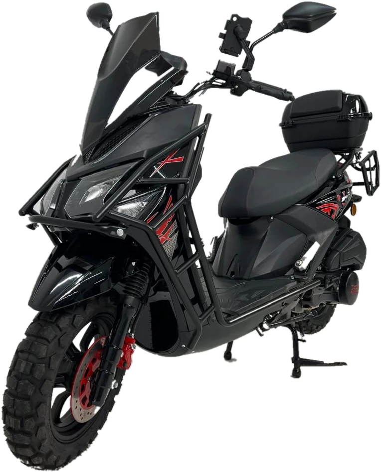
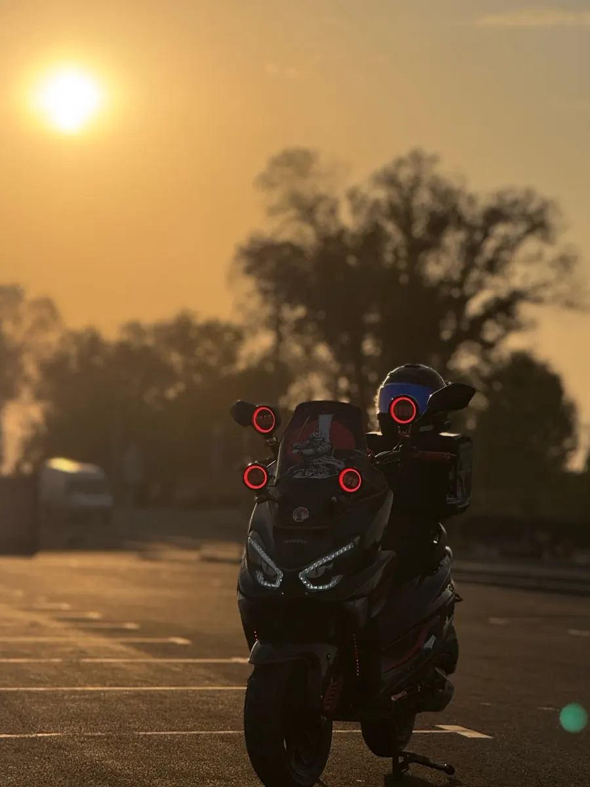
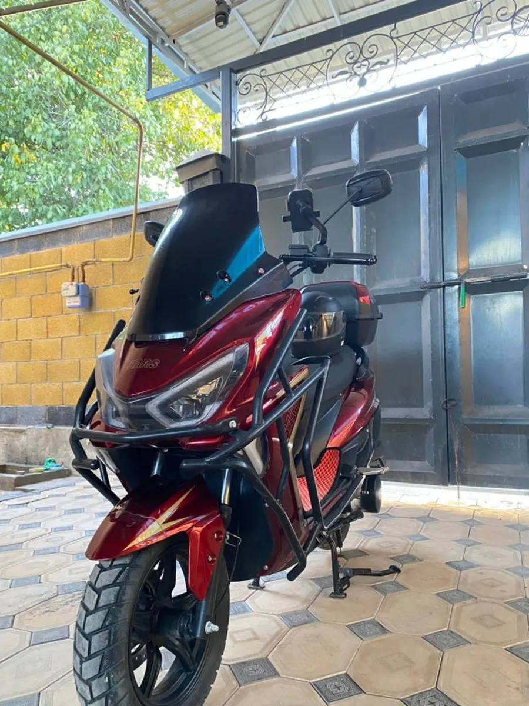
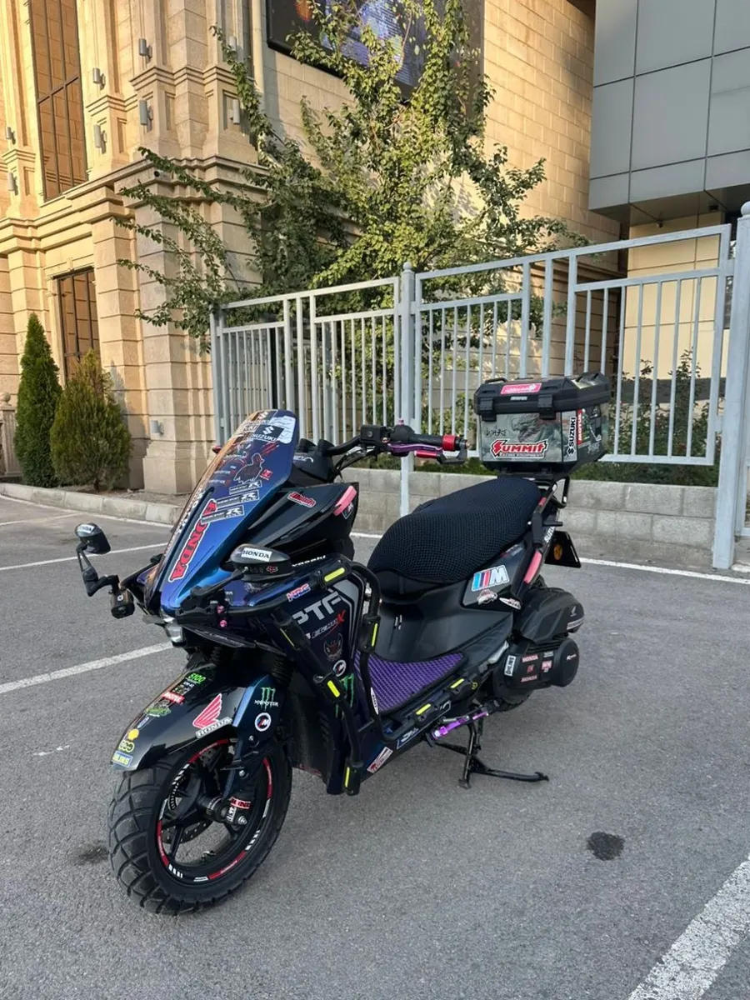
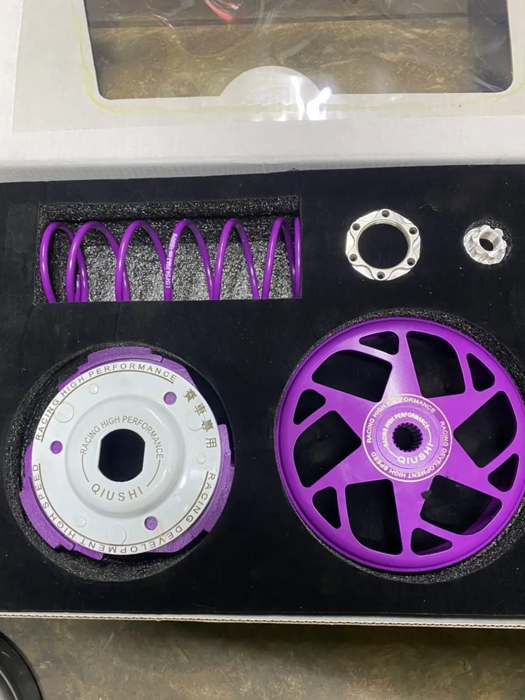
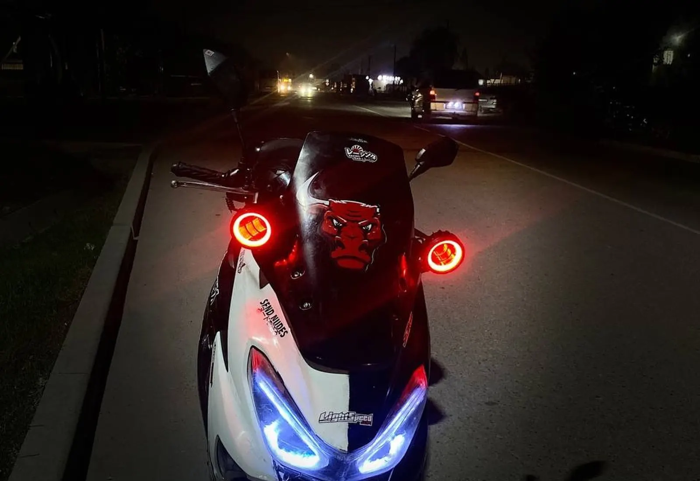

Каждый день до 03:00
Ремонт мотоциклов и скутеров
Мастерская и магазин запчастей на Гагарина, 83/1а. Опишите, что с мотоциклом, и заявка уйдёт в WhatsApp.
Оставить заявку4,9 в 2ГИС · 391 оценка

С чем приезжают
Все услугиМастерская и магазин
Instagram





Отзывы
4,9 в 2ГИС, 279 отзывов
Ынтымак Мото, сервис 10/10! Ребята очень вежливые, обслужили быстро и с уважением.
Провели диагностику, подробно рассказали, что и почему нужно сделать. Работу выполнили аккуратно и в срок.
Лучший мотосервис! Приняли без лишних ожиданий, всё сделали аккуратно и надёжно.
Жигиттер свое дело знают, все чётко честно и без воды. Всем советую туда, поломку любого типа. Да и по времени четко сделали
Работают отлично. Быстро и качественно. Всем советую это место. Цены приемлемые
Очень хорошо чинит. Качественно делает. Мопеду стало лучше чем раньше
Ребята умеют свое дело , быстро и качественно чинят все виды скутеров
Спасибо за обслуживание сделали мой мотор не дымит не троить красавчики
Мастера опытные. Многие товары есть в наличии.